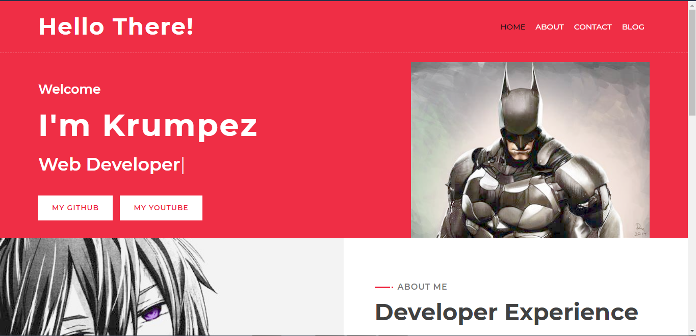
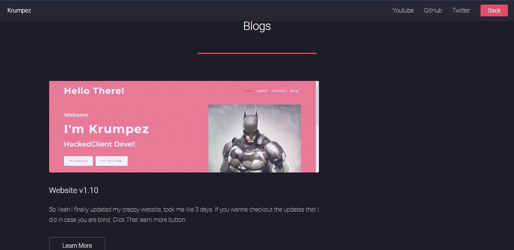

CHANGED MY NAME AND PROFILE PIC
So i recently changed name from Vortexinnit to Krumpez, for some obvious reason. In short I got annoyed of people saying tommyinnit stan. A simple change yet pretty complicated, also I got a new profile pic that i replaced with my old pic on the website.
CHANGE IN BUTTONS
I changed the button from youtuber and developer and replaced it with my github and my youtube and it feels good now.
ADDED BLOGS
A lot of people were asking me to add blogs to my website, so there it is. Its finally here, now if I did something like updating website, any tutorials or stuff like that I will post those things here. No need to spam my dms with "HOW TO DO THIS?" "HOW TO DO THAT?" Just go to my blogs and see there.
BUG FIXES
- Fixed the buttons not working.
- Fixed the website looking ugly when clicked on home page (thanks to manav)
- Fixed the font glitch at the end of home page
- Fixed delhi spelling at the end of page (don't bully me lol)